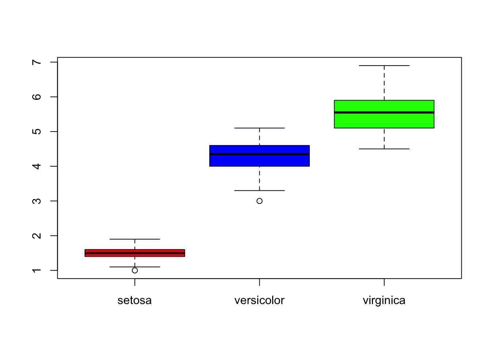

Last updated: 2018-12-19
workflowr checks: (Click a bullet for more information) ✔ R Markdown file: up-to-date
Great! Since the R Markdown file has been committed to the Git repository, you know the exact version of the code that produced these results.
✔ Environment: empty
Great job! The global environment was empty. Objects defined in the global environment can affect the analysis in your R Markdown file in unknown ways. For reproduciblity it’s best to always run the code in an empty environment.
✔ Seed:
set.seed(20181026)
The command set.seed(20181026) was run prior to running the code in the R Markdown file. Setting a seed ensures that any results that rely on randomness, e.g. subsampling or permutations, are reproducible.
✔ Session information: recorded
Great job! Recording the operating system, R version, and package versions is critical for reproducibility.
✔ Repository version: 8d42e15
wflow_publish or wflow_git_commit). workflowr only checks the R Markdown file, but you know if there are other scripts or data files that it depends on. Below is the status of the Git repository when the results were generated:
Ignored files:
Ignored: .DS_Store
Ignored: .RData
Ignored: .Rhistory
Ignored: analysis/.DS_Store
Ignored: analysis/.Rapp.history
Ignored: analysis/.Rhistory
Ignored: analysis/figure/
Ignored: docs/.DS_Store
Run through examples in chap 1; practice R as a calculator
my_vector <- c(1,3,5,8,10,-5,3)
length(my_vector)[1] 7sum(my_vector)[1] 25set.seed(13579)
my_normal_vector <- rnorm(n=length(my_vector))
my_normal_vector[1] -1.2347155 -1.2528339 -0.2547780 -1.5266466 1.0971147 2.4887442
[7] 0.7794803my_vector * my_normal_vector[1] -1.234715 -3.758502 -1.273890 -12.213173 10.971147 -12.443721
[7] 2.338441my_vector %*% my_normal_vector [,1]
[1,] -17.61441my_matrix <- matrix(rnorm(n=5*4, mean=10, sd=4),
nrow=5, ncol=4)gen_exp <- rexp(n=5*4, rate=1)
my_matrix_2 <- matrix(gen_exp, ncol=4, nrow=5)my_matrix [,1] [,2] [,3] [,4]
[1,] 10.753500 6.933320 10.987272 3.201161
[2,] 5.894216 8.250841 6.553208 13.599404
[3,] 8.973170 8.113796 12.639644 12.884479
[4,] 12.984201 7.754463 9.852634 9.346003
[5,] 11.884883 5.139338 6.189902 6.933884my_matrix_2 [,1] [,2] [,3] [,4]
[1,] 0.33735737 1.30599715 0.5887249 0.3068181
[2,] 2.82539938 0.19481413 0.4311200 1.2925390
[3,] 1.12580580 0.09892251 4.1484588 0.1203261
[4,] 0.44286020 2.12785120 0.4060667 0.8234967
[5,] 0.02611241 1.52468762 2.4491404 1.0894686my_matrix * my_matrix_2 [,1] [,2] [,3] [,4]
[1,] 3.6277725 9.0548966 6.468480 0.9821741
[2,] 16.6535149 1.6073804 2.825219 17.5777600
[3,] 10.1020464 0.8026371 52.435041 1.5503396
[4,] 5.7501857 16.5003440 4.000827 7.6964023
[5,] 0.3103429 7.8358856 15.159939 7.5542487my_huge_matrix <- matrix(rgamma(10000,
shape=1),
ncol=10)
head(my_huge_matrix) [,1] [,2] [,3] [,4] [,5] [,6]
[1,] 0.1585023 0.2594988 0.3045265 0.08611515 1.3593091 0.46796143
[2,] 2.3844915 2.1434004 0.2076556 0.63440774 0.4867942 2.49800677
[3,] 2.0498783 0.5644282 0.6914348 0.09216033 0.1677927 0.06666595
[4,] 0.6544284 0.7128908 2.6595979 0.62706588 0.5343128 0.61398043
[5,] 0.2356970 0.0428360 0.9375176 1.54803682 2.1684759 0.96108695
[6,] 1.6757674 0.1273529 0.3218827 0.05611610 0.4491089 1.35358352
[,7] [,8] [,9] [,10]
[1,] 0.01747011 1.11846385 0.48473271 2.56600850
[2,] 1.33030870 1.00036235 1.47877854 0.27404199
[3,] 1.04110944 1.31866862 0.00207013 0.01210107
[4,] 1.22492017 0.67984458 0.61003525 0.69062251
[5,] 2.83205475 0.09203886 3.78459495 1.74063865
[6,] 0.53563203 2.12307883 0.55484225 0.64885783tail(my_huge_matrix) [,1] [,2] [,3] [,4] [,5] [,6]
[995,] 2.2065900 2.6204056 0.3617654 0.3113698 0.9299397 1.71883278
[996,] 0.1513955 0.4863449 0.6484172 1.5576926 1.6252196 0.22696258
[997,] 1.5559238 0.1786538 0.4939397 3.0058030 0.5783891 1.21986101
[998,] 0.3488299 0.3241757 0.6761012 0.8329858 0.6561114 0.04526154
[999,] 0.3982543 1.2403230 0.1033660 2.1795944 0.9295799 0.35622295
[1000,] 1.5952870 0.2751454 1.0844354 0.1188376 0.2601905 1.78664851
[,7] [,8] [,9] [,10]
[995,] 0.6832110 0.06476413 0.3178026 0.43963115
[996,] 0.1349167 2.13606096 0.3472772 0.06109482
[997,] 0.4762442 1.99384835 0.4734880 1.22129446
[998,] 0.6484562 0.46446190 0.4860314 0.22367593
[999,] 0.6209044 0.35793411 1.4893320 1.01059960
[1000,] 2.0429866 1.20263627 0.3589378 0.83118101## Make sequence of values
1:10 [1] 1 2 3 4 5 6 7 8 9 100:10 [1] 0 1 2 3 4 5 6 7 8 9 1010:0 [1] 10 9 8 7 6 5 4 3 2 1 0-5:5 [1] -5 -4 -3 -2 -1 0 1 2 3 4 5seq(from=-5, to=50, by=5) [1] -5 0 5 10 15 20 25 30 35 40 45 50seq(from=-5, to=50, length=50) [1] -5.0000000 -3.8775510 -2.7551020 -1.6326531 -0.5102041 0.6122449
[7] 1.7346939 2.8571429 3.9795918 5.1020408 6.2244898 7.3469388
[13] 8.4693878 9.5918367 10.7142857 11.8367347 12.9591837 14.0816327
[19] 15.2040816 16.3265306 17.4489796 18.5714286 19.6938776 20.8163265
[25] 21.9387755 23.0612245 24.1836735 25.3061224 26.4285714 27.5510204
[31] 28.6734694 29.7959184 30.9183673 32.0408163 33.1632653 34.2857143
[37] 35.4081633 36.5306122 37.6530612 38.7755102 39.8979592 41.0204082
[43] 42.1428571 43.2653061 44.3877551 45.5102041 46.6326531 47.7551020
[49] 48.8775510 50.0000000## Data frame versus matrix
my_df <- data.frame(my_matrix, letters=c("A", "b", "c", "d","e"))
## Character vectors
my_name_vector <- c("Anne", "Bob", "Charles")
## Check the class of objects
class(my_name_vector)[1] "character"class(my_normal_vector)[1] "numeric"class(my_huge_matrix)[1] "matrix"class(my_df)[1] "data.frame"#-------------------------------------------------------------
## Basic plotting
## Histogram: hist
## ?hist
## Histogram of first five columns of my_huge_matrix
hist(my_huge_matrix[,c(1:5)])| Version | Author | Date |
|---|---|---|
| 65c976f | han16 | 2018-10-31 |
hist(my_huge_matrix[,1])| Version | Author | Date |
|---|---|---|
| 65c976f | han16 | 2018-10-31 |
hist(my_huge_matrix[,2])| Version | Author | Date |
|---|---|---|
| 65c976f | han16 | 2018-10-31 |
hist(my_huge_matrix[,3], main="Better histogram",
xlab="Value", breaks=50,
col="cornflowerblue")| Version | Author | Date |
|---|---|---|
| 65c976f | han16 | 2018-10-31 |
par(mfrow=c(2,3))
hist(my_huge_matrix[,1])
hist(my_huge_matrix[,2])
hist(my_huge_matrix[,3], main="Better histogram",
xlab="Value", breaks=50,
col="cornflowerblue")| Version | Author | Date |
|---|---|---|
| 65c976f | han16 | 2018-10-31 |
## Scatterplots
data(iris)
?plot
## Plot petal length vs petal width
col_vector <- rep(NA, nrow(iris))
setosa_index <- which(iris$Species == "setosa")
versicolor_index <- which(iris$Species == "versicolor")
virginica_index <- which(iris$Species == "virginica")
col_vector[setosa_index] <- "blue"
col_vector[versicolor_index] <- "red"
col_vector[virginica_index] <- "black"
plot(x=iris$Petal.Length,
y=iris$Petal.Width,
col=col_vector, pch=19)
legend("topleft", pch=19,
col=c("blue","red","black"),
legend=c("Setosa", "Versicolor", "Virginica"))| Version | Author | Date |
|---|---|---|
| 65c976f | han16 | 2018-10-31 |
## Plot Petal length vs width, coloring by sepal length
col_vector <- rep(NA, nrow(iris))
high_index <- which(iris$Sepal.Length >
mean(iris$Sepal.Length))
col_vector[high_index] <- "red"
col_vector[-high_index] <- "blue"
shape_vector <- rep(NA, nrow(iris))
shape_vector[setosa_index] <- "S"
shape_vector[versicolor_index] <- "E"
shape_vector[virginica_index] <- "I"
plot(x=iris$Petal.Length,
y=iris$Petal.Width,
col=col_vector, pch=shape_vector)
legend("topleft", pch=19,
col=c("blue","red"),
legend=c("Low sepal length",
"High sepal length"))| Version | Author | Date |
|---|---|---|
| 65c976f | han16 | 2018-10-31 |
plot(x=1:nrow(iris), y=sort(iris$Petal.Width),
type="l")| Version | Author | Date |
|---|---|---|
| 65c976f | han16 | 2018-10-31 |
## Boxplots
boxplot(iris$Petal.Length ~ iris$Species,
col=c("red", "blue", "green"))
| Version | Author | Date |
|---|---|---|
| 65c976f | han16 | 2018-10-31 |
## Density plots
## Hint: which function to select species
## lines()
plot(density(iris$Petal.Length[which(iris$Species ==
"setosa")]),
xlim=c(0,8))
lines(density(iris$Petal.Length[which(iris$Species ==
"virginica")]))
lines(density(iris$Petal.Length[which(iris$Species ==
"versicolor")]))| Version | Author | Date |
|---|---|---|
| 65c976f | han16 | 2018-10-31 |
sessionInfo()R version 3.5.1 (2018-07-02)
Platform: x86_64-apple-darwin15.6.0 (64-bit)
Running under: macOS High Sierra 10.13.6
Matrix products: default
BLAS: /Library/Frameworks/R.framework/Versions/3.5/Resources/lib/libRblas.0.dylib
LAPACK: /Library/Frameworks/R.framework/Versions/3.5/Resources/lib/libRlapack.dylib
locale:
[1] en_US.UTF-8/en_US.UTF-8/en_US.UTF-8/C/en_US.UTF-8/en_US.UTF-8
attached base packages:
[1] stats graphics grDevices utils datasets methods base
loaded via a namespace (and not attached):
[1] workflowr_1.1.1 Rcpp_1.0.0 digest_0.6.18
[4] rprojroot_1.3-2 R.methodsS3_1.7.1 backports_1.1.2
[7] git2r_0.23.0 magrittr_1.5 evaluate_0.12
[10] stringi_1.2.4 whisker_0.3-2 R.oo_1.22.0
[13] R.utils_2.7.0 rmarkdown_1.10 tools_3.5.1
[16] stringr_1.3.1 yaml_2.2.0 compiler_3.5.1
[19] htmltools_0.3.6 knitr_1.20 This reproducible R Markdown analysis was created with workflowr 1.1.1